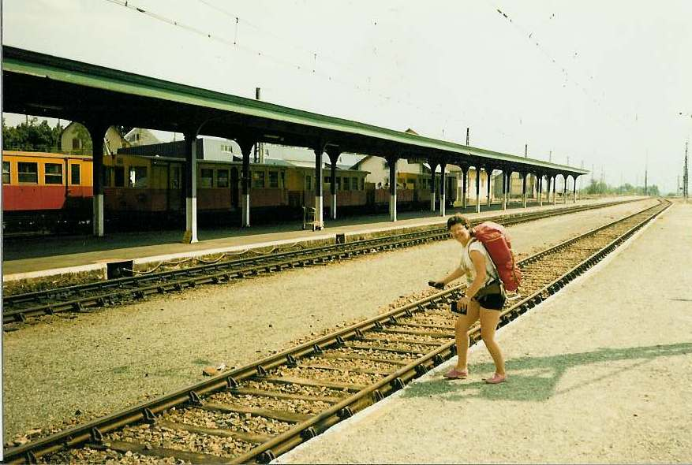

Inter Rail 1986 Day 15
Saturday 6th September 1986
Woke up at some ungodly hour as Barcelona station approached. We piled off the train and headed into the station. Checked our train time. Took ages to find the loo. In fact, had to have a coffee and doughnuts first. Soptted there were very silly doors in the station with not too sensitive light beam action.
All signs were in two languages i.e. Spanish and Catalan. Sat on the station and had a good read. Then had a wash although the loos were not exactly good. Spent our shrapnel prior to departure.

Train to La Tour de Caral was a local one i.e. it was shiggling about everywhere plus there was a man carrying ducks. The compensation was that the views just before La Tour de Caral were absolutely gorgeous. Lots of tall valleys and mountains meeting down at the river which the train route was following. Got to tell the length of a tunnel by the temperature within them. This area is a lot drier looking than the Alps but just as impressive.
At La Tour de Caral the border facilities were somewhat slack. A quick glance at our passports by the Spanish guy and a general wave by the FVrench type the other side of a very small barricade. There were hellishly expensive bottles of Coke to buy whilst doing this. The views down towards Toulouse were just as good as anything seen previously. Discovered where to catch the bus to Andorra. However we felt a little scenery sated so didn't spend much more time checking the view. Got into Toulouse at 16:30.
There was no room available in left luggage so had to keep our packs with us. Bought 2.5 litres of wine for £1.60 together with some pate, bread and cheese and then found a restaurant serving a set menu at 42FF. I had crudites (vegetable) plus moules frites followed by chocolate icecream all washed down with some red wine. Sat for a bit over the meal and then watched boats passing through the lockgates on the canal situated right outside the station. Then found a park bench next to the canal on which to sit and chat whilst having a few glasses of wine.
Eventually wandered back into the station and found our train. We had a very plush SNCF carriage. We left on time and got into Narbonne at 22.38. I had got a little kip on the train but this left me feel even more knackered so I got out my sheet and got a bit more sleep on Narbonne Station.
I set the alarm to go off and it was just as well I did because I was the only one awake when the train arrived 2.5 hours later. It was a straight through train to Rome. We found a compartment in which two of us could go use the seats as normal and one of us could use the compartment floor. Jon settled himself in the corridor.In the middle of the night Jon was shifted so he shared the compartment floor with me.
{kind=link}